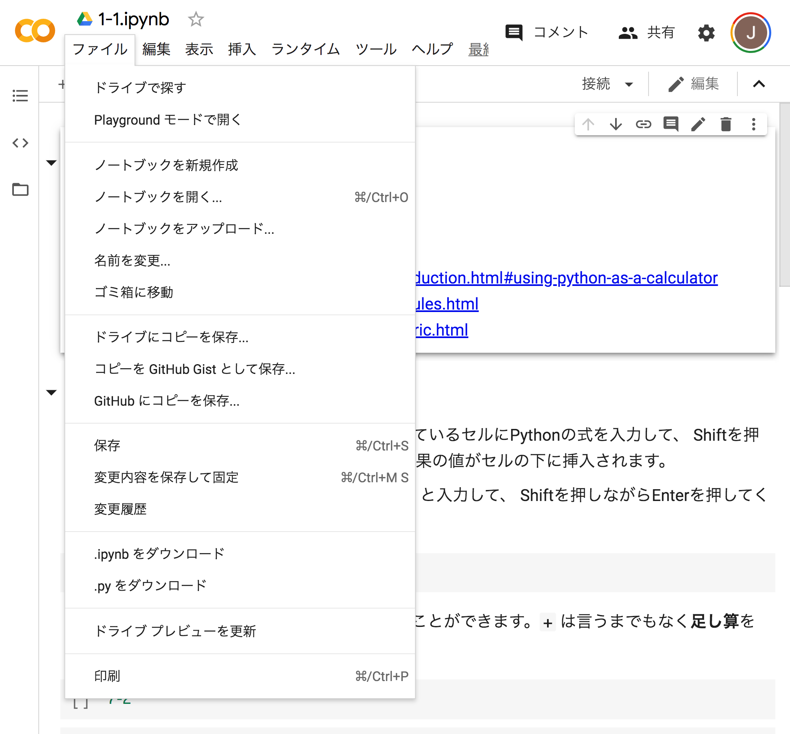
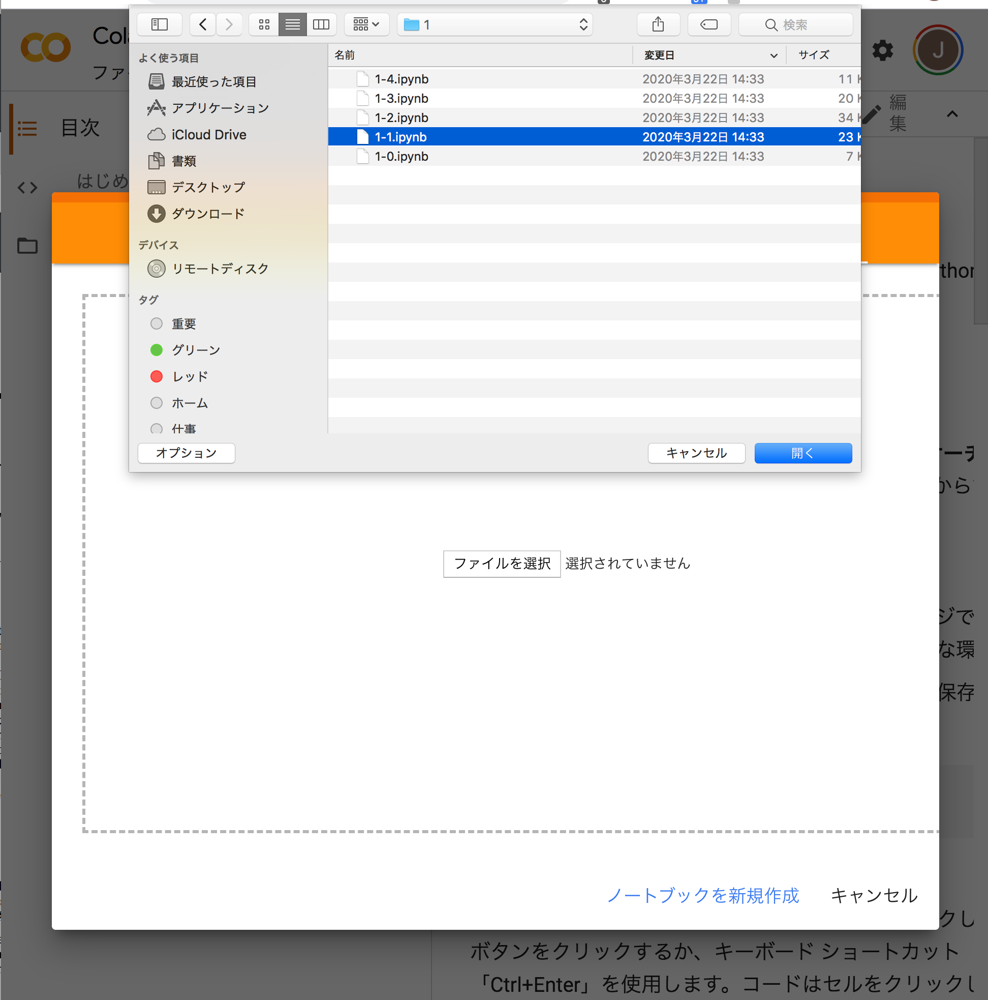

Pythonの準備¶
主としてPython環境のセットアップ方法について説明します。
Python¶
Pythonは、フリー・オープンソースのインタプリタ・スクリプト言語です。 ウェブサーバなどの各種のシステム構築に用いられますが、 データ分析、機械学習、数値計算、最適化、画像・信号処理、可視化などの科学技術計算にも広く用いられています。
設計思想は「シンプルで読みやすいコード」です。
[1]:
import this
The Zen of Python, by Tim Peters
Beautiful is better than ugly.
Explicit is better than implicit.
Simple is better than complex.
Complex is better than complicated.
Flat is better than nested.
Sparse is better than dense.
Readability counts.
Special cases aren't special enough to break the rules.
Although practicality beats purity.
Errors should never pass silently.
Unless explicitly silenced.
In the face of ambiguity, refuse the temptation to guess.
There should be one-- and preferably only one --obvious way to do it.
Although that way may not be obvious at first unless you're Dutch.
Now is better than never.
Although never is often better than *right* now.
If the implementation is hard to explain, it's a bad idea.
If the implementation is easy to explain, it may be a good idea.
Namespaces are one honking great idea -- let's do more of those!
Pythonは単なるプログラミング言語ではなく、 ライブラリ、フレームワーク、プラットフォーム、アプリケーションなどから成るエコシステムを構成しています。
Anaconda / Jupyter Notebook¶
本講義の教材は Jupyter Notebook のノートブックの形式で提供されています。 Jupyter Notebook の処理系は、Anacondaディストリビューションに含まれています。 また、Google Colaboratory を利用することもできます。
Anaconda (https://anaconda.org/)
Pythonと主要なライブラリ（モジュール）を一括でインストール可能にしたディストリビューション
以下の Jupyter Notebook も含む
Python2系とPython3系があり、本講義ではPython3系を使用
Jupyter Notebook (http://jupyter.org/)
Pythonコードをブラウザ上で対話的に実行可能な環境
ノートブックを通して、ブラウザ上でコードの記述と実行結果の保存と共有が可能
Google Colaboratory
ノートブックを実行できるクラウド環境
Googleが提供
Python環境のセットアップ¶
以下では、三つの方法について説明しています。
個人PC (Windows) にAncondaをインストールする場合
個人PC (Mac) にAncondaをインストールする場合
個人PCにAnacondaをインストールしない・できない場合 — Google Colaboratory
Python環境のセットアップ（Windows向け）¶
個人PC（Windows10）にAncondaをインストールする場合
AnacondaのダウンロードページからWindows用の Python 3.7 version 64-Bit Graphical Installer (Anaconda3-2018.12-Windows-x86_64.exe) をダウンロード
インストーラを起動し、License Agreementに [I agree] を選択
Install forに [Just me] を選択
インストール先をデフォルト（
C:\Users\you\Anaconda3）から変更したい場合は、インストール先を指定して [Next] を選択Advanced Optionsの2つのチェックボックス（Add Anaconda to my PATH environment variableとRegister Anaconda as my default Python 3.7）のチェックを外したままインストール [install] を選択
Python本体や Jupyter Notebook をコマンドラインで起動したい場合は、コマンドプロンプトの代わりに
Anaconda Commad Promptを使用してください。
Windowsのスタートメニューのプログラム一覧に
Anaconda3 (64bit)というフォルダが新しく作られており、その中のJupyter Notebookを選択すると、既定のブラウザで Jupyter Notebook が起動します。Anaconda Navigatorから起動してもよいです。
図は以下のMac向けの方を参照してください。
Python環境のセットアップ（Mac向け）¶
個人PC (Mac OS X) にAncondaをインストールする場合
AnacondaのダウンロードページからMac用の Python 3.7 version インストーラ (Anaconda3-2018.12-MacOSX-x86_64.pkg) をダウンロード
インストーラを起動しインストールしてください。
インストール先をデフォルト (
~/anaconda3) から変更したい場合は、インストール先を指定してください。アプリケーション一覧に
Anaconda Navigatorというアプリケーションがインストールされているので、Anaconda Navigatorを起動して、その中にある Jupyter Notebook から[Launch]すると Jupyter Notebook が起動します。

Application Folder |
Start Anaconda Navigator |
|---|---|
 |
Python環境のセットアップ (Google Colaboratory)¶
個人PCにAnacondaをインストールしない・できない場合 — Google Colaboratory
Googleアカウント（個人でもECCSでもどちらでもよい）でログイン後にブラウザで以下にアクセス
Jupyterノートブックファイル (
.ipynb) をアップロード
Jupyterノートブックと同様に作業します
作業が終わったらノートブックを保存して手元にダウンロードします